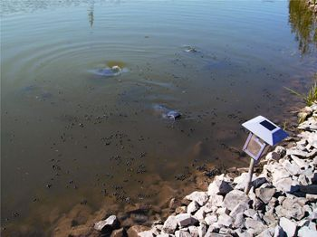

I’ve been after my rose-growing wife to buy chickens for years now. I have been trying, unsuccessfully, to convince her that chickens would help control the Japanese beetles that damage her flowers.
With last year’s hot, dry summer here in Ohio, the beetle population was out of control, so until we get those chickens, we put up a few beetle traps that use scent lures to attract and trap pests.
When the trap bags fill up with the beetles, I put them in the freezer for about a day to chill them. Then I feed the beetles to the fish in our pond. The catfish can eat a dozen of them in a mouthful and the bluegill love them, too!
|
 BOB FALK Catfish and bluegill love pesky Japanese beetles. |
|
|